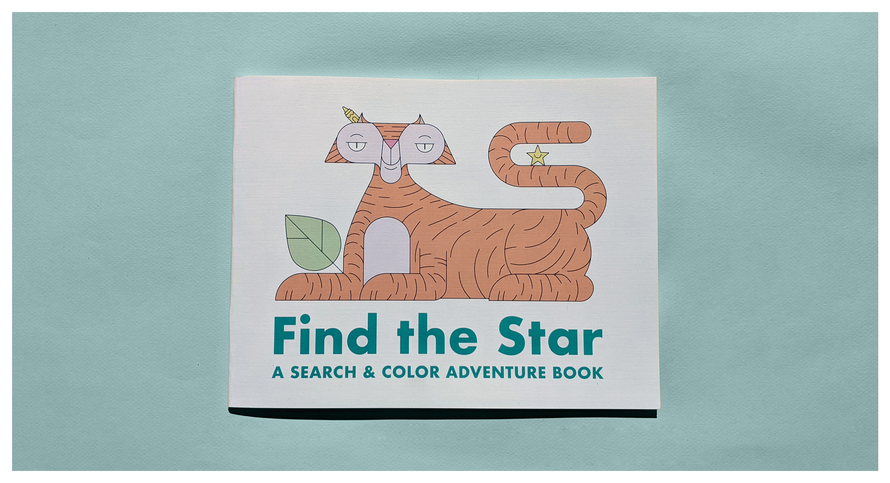

A Coloring Book for You & Yours
Do you find yourself wanting to fulfill a creative urge and just don’t know what to do. Are you someone who likes to color and appreciate a good adventure from time to time? Or perhaps you’re wanting to entertain and challenge your little ones. Look no further friends, ‘Find the Star A Search & Color Adventure Book’ is just for you. Explore the 20 fine crafted pages of pure coloring bliss. Navigate through the book while precisely filling in the lines and finding the star. So sharpen your crayons, colored pencils, markers, or whatever your flavor of expression might be. Download and print the book to get started.
Backstory
Early in 2019 we booked a trip to visit good friends who have two little ones, a toddler and an infant. I had asked the toddler Emerson, “What would you like me to draw you so you can color it when i visit” She immediately replied “I want a unicorn, a mermaid, and Jasper(her new little brother)”. A few days later I had made those wishes come to life and more. I ended up with twenty or so pages of fun things to color. So I said, “I’ll make a book for her”, but I didn’t know how to make a book, but I knew who did, a fellow designer I work with, Hank.
Hank H Huang AKA ‘Triple H’ is a master craft at book making and binding. He has a wide range of books that he’s crafted by hand with minimal tooling and all with unique materials, quite impressive to say the least. I reached out to Hank and we met. In about 60 minutes time Hank dropped some serious knowledge. He gave me a quick run down on what I needed and how to execute. So I gathered the materials needed and got started.

I ended up with a twenty two page book. The pages were all hand drawn using a fine tip sharpie on 8.5”x11” 65 pound generic card stock paper with a diecut strip just near the spine. Those were sandwiched between two pieces of construction paper, red in the front and yellow in the back. The cover was 100 pound card stock and the back was 1/8 inch chipboard. I finished the binding with a color strip to hide the exposed glue and to give it a little more strength. Needles to say I was pumped that I made a book, but the craftsmanship was quite disappointing. Let’s just say I better understand the phrase “it takes a day to learn but a life time to perfect”.
Fast forward to the trip. We show up at the local pancake house and I deliver the book to Emerson. She was more than delighted with the final product. She immediately started coloring and exploring the book as I had hidden stars in most of the pages. The fact that she dropped her fork which was holding a fresh stack of pancakes to then coloring the book said a lot, I was stoked to deliver a smile.
A month passed and I started brainstorming yearly holiday gift ideas for friends and family and immediately thought of the coloring book. I thought, if I can top pancakes to a toddler than everyone might enjoy this book as well. So I had two options, one make thirty books by hand or two place an order with a professional printer. There was no hesitation to have these printed by a professional. I had “Find the Star a search and color adventure” printed and gifted. It was a success, everyone enjoyed the books from all ages.
As I'm writing this, it's mid 2020 and the world is a bit different now. We're finding ourselves in this post modern Groundhog Day like movie full of uncertainty and certainty, doing things we haven’t planned to do and dealing with things we’re not so good at…. yet anyways. So I’d like to offer you this coloring book, in hopes to buy you some down time with the kids or maybe to meditate through movement to think more clearly. Or maybe just put a smile on your face as you flip through the pages of my weird drawings. Either way I truly hope you enjoy, and please spread the smiles for me.